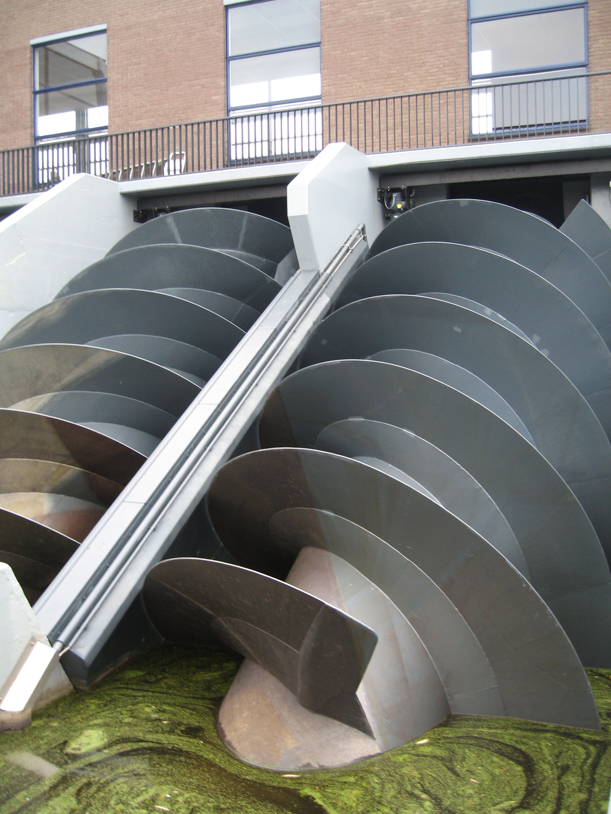
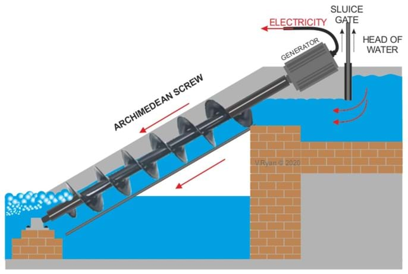

Archimedes Screw
aar·kuh·mee·deez skroo
🔊
What is Archimedes Screw ?
The Archimedes screw, also known as the "Archimedean screw" or "screw pump," is a simple machine historically attributed to the ancient Greek mathematician and inventor Archimedes. This device is used to lift water or other fluids from a lower level to a higher level. It's a form of a screw conveyor and consists of a large screw-like structure encased in a cylindrical pipe.
A Closer Look at the Basics of the Archimedes Screw
The basic concept of the Archimedes' screw involves a helical screw blade wrapped around a cylindrical shaft. This screw is placed inside a hollow tube or trough, typically tilted at an angle. When the entire assembly is turned by hand or by some other source of rotational energy, the screw's helical blade scoops up water from the lower end of the trough and carries it upward along the threads of the screw. Eventually, the water is discharged at the higher end of the trough, effectively lifting water against the force of gravity.
Applications of Archimedes Screw
The Archimedes screw has found modern applications in various fields, including agriculture, sewage treatment, aquaculture, and industry. It's still used in certain situations where a reliable and low-tech method of moving fluids or granular materials is needed.